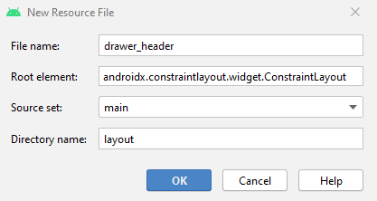
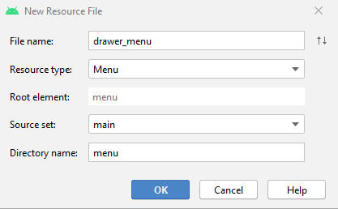
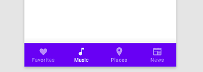
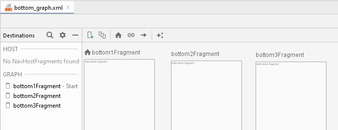
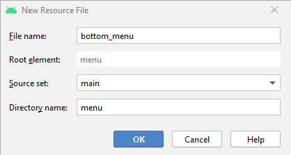
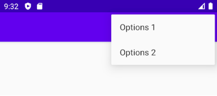
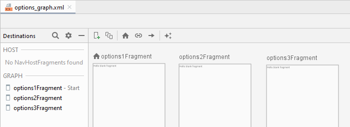
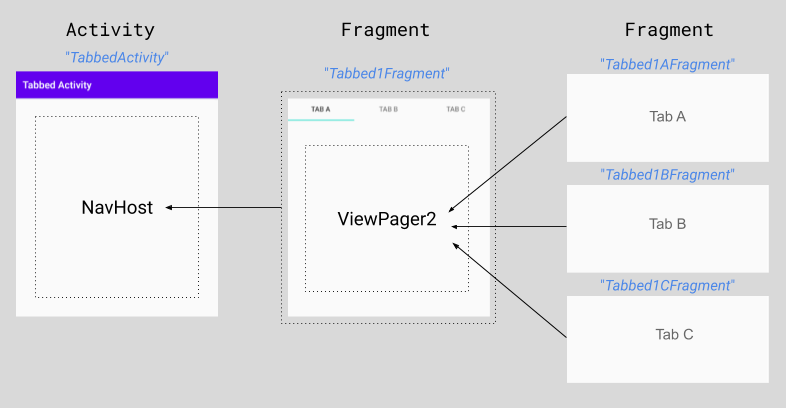
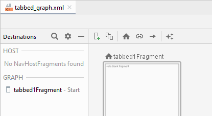
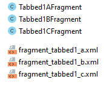

Navigation
El componente
Navigation
incluye una clase NavigationUI. Esta clase contiene métodos estáticos que
administran la navegación con el NavigationView, el BottomNavigationView
y el OptionsMenu.

Además de usar estos elementos de navegación, en esta práctica usaremos también
la navegación mediante Tabs (o pestañas), usando los elementos TabLayout
y ViewPager2, aunque estos no están incluidos en el
componente Navigation.

Desarrollaremos una app que permitirá navegar entre destinos usando todos estos elementos.
 https://github.com/gerardfp/navigation
https://github.com/gerardfp/navigation
Crea el proyecto
En el asistente de "Nueva Activity", Android Studio proporciona plantillas para crear
Activities que incluyen estos componentes
de navegación. Sin embargo, esta vez lo haremos "desde 0", para comprender todos
los elementos que intervienen.
-
Selecciona "Empty Activity" como plantilla para la MainActivity
-
Añade las dependencias para incluir el componente Navigation, ViewPager2 y Material:
build.gradle (Module: app)
dependencies {
implementation 'androidx.navigation:navigation-fragment:2.3.0'
implementation 'androidx.navigation:navigation-ui:2.3.0'
implementation 'androidx.viewpager2:viewpager2:1.0.0'
implementation 'com.google.android.material:material:1.3.0-alpha03'
}
-
Habilita el ViewBinding:
build.gradle (Module: app)
android {
buildFeatures {
viewBinding true
}
}
-
Por último, deshabilitaremos la ActionBar (la barra superior) que se incluye
de forma automática en todas las Activities, ya que en este proyecto utilizaremos la versión
más reciente Toolbar, que se integra mejor con los elementos de navegación:
Añade los siguientes elementos al fichero styles.xml:
res/values/styles.xml
<resources>
<style name="AppTheme" parent="Theme.AppCompat.Light.DarkActionBar">
...
<item name="windowActionBar">false</item>
<item name="windowNoTitle">true</item>
</style>
</resources>
Para más info sobre la actualización de la ActionBar por la Toolbar, consulta:
Cómo configurar la barra de la app
Activities
Cada uno de elementos de navegación (NavigationView, BottomNavigationView, OptionsMenu y TabLayout + ViewPager2)
lo implementaremos en una Activity diferente y usaremos la MainActivity para lanzar las diferentes Activities.

Empezaremos creando estas Activities, con los nombres: DrawerActivity, BottomActivity, OptionsActivity y TabbedActivity.
Para crear una Activity selcciona New ⯈ Activity ⯈ Empty Activity e introduce el nombre en el campo Activity Name

Observa que cuando creas una Activity con el asistente, e introduces un nombre como AbcActivity, automáticamente se crea
un archivo AbcActivity.java para la clase, y otro activity_abc.xml para el layout.
También se crea una entrada para la activity en el elemento <application> del fichero AndroidManifest.
Toolbar
Ahora el siguinte paso será añadir una Toolbar en cada una de estas activities.
La Toolbar se utilitza conjuntamente con el CoordinatorLayout y el AppBarLayout que permiten
utilizar transiciones y animaciones (por ejemplo una Collapsing Toolbar). Aunque en esta práctica no las haremos, mejor
si la usamos desde el principio.
Sustituye el layout de cada una de las 5 activities por este layout:
res/layout/activity_$$$.xml
<?xml version="1.0" encoding="utf-8"?>
<androidx.coordinatorlayout.widget.CoordinatorLayout
xmlns:android="http://schemas.android.com/apk/res/android"
xmlns:app="http://schemas.android.com/apk/res-auto"
android:layout_width="match_parent"
android:layout_height="match_parent">
<com.google.android.material.appbar.AppBarLayout
android:id="@+id/appBarLayout"
android:layout_width="match_parent"
android:layout_height="wrap_content"
android:theme="@style/ThemeOverlay.AppCompat.Dark.ActionBar">
<androidx.appcompat.widget.Toolbar
android:id="@+id/toolbar"
android:layout_width="match_parent"
android:layout_height="?attr/actionBarSize"
android:background="?attr/colorPrimary"
app:popupTheme="@style/ThemeOverlay.AppCompat.Light" />
</com.google.android.material.appbar.AppBarLayout>
<androidx.constraintlayout.widget.ConstraintLayout
android:layout_width="match_parent"
android:layout_height="match_parent"
app:layout_behavior="@string/appbar_scrolling_view_behavior">
<!-- Aqui va el contenido de la activity -->
</androidx.constraintlayout.widget.ConstraintLayout>
</androidx.coordinatorlayout.widget.CoordinatorLayout>
MainActivity
El siguiente paso es añadir 4 botones en la MainActivity para que cada uno nos lleve a una de las otras Activities.
En el <ConstraintLayout> de la activity_main.xml añade los 4 botones:
res/layout/activity_main.xml
<androidx.constraintlayout.widget.ConstraintLayout
android:layout_width="match_parent"
android:layout_height="match_parent">
<Button
android:id="@+id/action_goto_drawerActivity"
android:layout_width="wrap_content"
android:layout_height="wrap_content"
android:text="Drawer"
app:layout_constraintBottom_toTopOf="@id/action_goto_bottomActivity"
app:layout_constraintLeft_toLeftOf="parent"
app:layout_constraintRight_toRightOf="parent"
app:layout_constraintTop_toTopOf="parent" />
<Button
android:id="@+id/action_goto_bottomActivity"
android:layout_width="wrap_content"
android:layout_height="wrap_content"
android:text="Bottom"
app:layout_constraintBottom_toTopOf="@id/action_goto_optionsActivity"
app:layout_constraintLeft_toLeftOf="parent"
app:layout_constraintRight_toRightOf="parent"
app:layout_constraintTop_toBottomOf="@id/action_goto_drawerActivity" />
<Button
android:id="@+id/action_goto_optionsActivity"
android:layout_width="wrap_content"
android:layout_height="wrap_content"
android:text="Options"
app:layout_constraintBottom_toTopOf="@id/action_goto_tabbedActivity"
app:layout_constraintLeft_toLeftOf="parent"
app:layout_constraintRight_toRightOf="parent"
app:layout_constraintTop_toBottomOf="@id/action_goto_bottomActivity" />
<Button
android:id="@+id/action_goto_tabbedActivity"
android:layout_width="wrap_content"
android:layout_height="wrap_content"
android:text="Tabs"
app:layout_constraintBottom_toBottomOf="parent"
app:layout_constraintLeft_toLeftOf="parent"
app:layout_constraintRight_toRightOf="parent"
app:layout_constraintTop_toBottomOf="@id/action_goto_optionsActivity" />
</androidx.constraintlayout.widget.ConstraintLayout>
Ahora implementamos el comportamiento del evento clic, añadiendo un OnClickListener en cada botón,
de manera que cuando se haga clic en un botón se iniciará la activity correspondiente.
Para iniciar una Activity hay que llamar al método startActivity() y pasarle un objeto de clase
Intent,
indicando en los parámetros del constructor el objeto de la Activity en la que estamos y la clase de
la Activity que queremos iniciar.
Reemplaza el código de la clase MainActivity por este (¡excepto la primera linea del package!).
Usa Alt + Intro
para importar la clase de databinding):
MainActivity.java
import android.content.Intent;
import android.os.Bundle;
import android.view.View;
import androidx.appcompat.app.AppCompatActivity;
public class MainActivity extends AppCompatActivity {
ActivityMainBinding binding;
@Override
protected void onCreate(Bundle savedInstanceState) {
super.onCreate(savedInstanceState);
setContentView((binding = ActivityMainBinding.inflate(getLayoutInflater())).getRoot());
setSupportActionBar(binding.toolbar);
binding.actionGotoDrawerActivity.setOnClickListener(new View.OnClickListener() {
@Override
public void onClick(View view) {
startActivity(new Intent(MainActivity.this, DrawerActivity.class));
}
});
binding.actionGotoBottomActivity.setOnClickListener(new View.OnClickListener() {
@Override
public void onClick(View view) {
startActivity(new Intent(MainActivity.this, BottomActivity.class));
}
});
binding.actionGotoOptionsActivity.setOnClickListener(new View.OnClickListener() {
@Override
public void onClick(View view) {
startActivity(new Intent(MainActivity.this, OptionsActivity.class));
}
});
binding.actionGotoTabbedActivity.setOnClickListener(new View.OnClickListener() {
@Override
public void onClick(View view) {
startActivity(new Intent(MainActivity.this, TabbedActivity.class));
}
});
}
}
La llamada a setSupportActionBar() 15 hace que la Activity utilice la Toolbar
que hemos puesto en el layout, en lugar de la ActionBar que venia por defecto, y que hemos
ocultado.
Observa que el primer parámetro del Intent siempre es MainActivity.this, es decir,
el objeto correspondiente a la MainActivity (la activity en la que estamos). En cambio el
segundo parámetro es la clase .class de la activity que queremos iniciar en cada botón.
Si ejecutas ahora la app, comprobarás que cada botón nos lleva a una Activity, que todavía está en blanco.
En los siguientes pasos, implementaremos la navegación usando un menú diferente para cada una de estas activities.
NavigationView
El NavigationView (más conocido como "Drawer menu") es el menú de navegación que
suele aparecer por la izquierda de la app cuando se pulsa el icono Hamburger  .
.
En la DrawerActivity de esta app usaremos un NavigationView para navegar a 3 destinos (fragments).

Empezamos creando el Grafo de Navegación, al que llamaremos drawer_graph.xml.
En él añadimos los 3 destinos. Para tener presente que estos destinos
serán accesibles desde el Drawer, les llamaremos: Drawer1Fragment, Drawer2Fragment, Drawer3Fragment.
Crea el grafo drawer_graph.xml y añade los 3 destinos:

En este grafo de navegación no hemos creado ninguna acción de navegación, ya que los 3 destinos son
independientes ente sí, es decir, no se navega de ninguno a otro, sino que todos son accesibles desde el
menú drawer.
El siguiente paso lógico debería ser añadir el NavHostFragment en el layout activity_drawer.xml, pero no lo hacemos ahora
ya que en el siguiente paso hay que volver a modificar el layout.
Añadir el NavigationView
Android proporciona el DrawerLayout para ser utilizado con el NavigationView. Su única
función es permitir que el NavigationView pueda ponerse "por encima" de los otros elementos.
Añadiremos el NavigationView a la DrawerActivity. Reemplaza el contenido del
fichero res/layout/activity_drawer.xml por este:
res/layout/activity_drawer.xml
<?xml version="1.0" encoding="utf-8"?>
<androidx.drawerlayout.widget.DrawerLayout
xmlns:android="http://schemas.android.com/apk/res/android"
xmlns:app="http://schemas.android.com/apk/res-auto"
android:id="@+id/drawer_layout"
android:layout_width="match_parent"
android:layout_height="match_parent"
android:fitsSystemWindows="true">
<androidx.coordinatorlayout.widget.CoordinatorLayout
android:layout_width="match_parent"
android:layout_height="match_parent">
<com.google.android.material.appbar.AppBarLayout
android:id="@+id/appBarLayout"
android:layout_width="match_parent"
android:layout_height="wrap_content"
android:theme="@style/ThemeOverlay.AppCompat.Dark.ActionBar">
<androidx.appcompat.widget.Toolbar
android:id="@+id/toolbar"
android:layout_width="match_parent"
android:layout_height="?attr/actionBarSize"
android:background="?attr/colorPrimary"
app:popupTheme="@style/ThemeOverlay.AppCompat.Light" />
</com.google.android.material.appbar.AppBarLayout>
<androidx.constraintlayout.widget.ConstraintLayout
android:layout_width="match_parent"
android:layout_height="match_parent"
app:layout_behavior="@string/appbar_scrolling_view_behavior">
<androidx.fragment.app.FragmentContainerView
android:name="androidx.navigation.fragment.NavHostFragment"
android:id="@+id/nav_host_fragment"
android:layout_width="match_parent"
android:layout_height="match_parent"
app:defaultNavHost="true"
app:navGraph="@navigation/drawer_graph" />
</androidx.constraintlayout.widget.ConstraintLayout>
</androidx.coordinatorlayout.widget.CoordinatorLayout>
<com.google.android.material.navigation.NavigationView
android:id="@+id/nav_view"
android:layout_width="wrap_content"
android:layout_height="match_parent"
android:layout_gravity="start"
android:fitsSystemWindows="true"
app:headerLayout="@layout/drawer_header"
app:menu="@menu/drawer_menu"/>
</androidx.drawerlayout.widget.DrawerLayout>
Observa que dentro del DrawerLayout hemos puesto el CoordinatorLayout que ya teníamos y el NavigationView.
Además hemos añadido el NavHostFragment que nos habíamos saltado antes. En él es donde se mostrarán los 3 destinos
que hemos creado en el grafo drawer_graph.xml.
Cabecera y menú
Observa que hay dos atributos XML en el elemento NavigationView que aparecen en rojo.
Estos son el app:headerLayout y el app:menu. Estos dos atributos definen los ficheros en que se
encuentran el layout de la cabecera y los ítems del menú:

Crearemos estos dos ficheros, y definiremos la cabecera y el menú:
-
Cabecera: Haz clic-derecho sobre la carpeta res/layout y ve a New ⯈ Layout Resource File e
introduce File name: drawer_header

En el layout de la cabecera añadiremos una imagen y un texto:
 res/layout/drawer_header.xml
res/layout/drawer_header.xml
<?xml version="1.0" encoding="utf-8"?>
<LinearLayout xmlns:android="http://schemas.android.com/apk/res/android"
xmlns:app="http://schemas.android.com/apk/res-auto"
android:layout_width="match_parent"
android:layout_height="wrap_content"
android:background="#009688"
android:gravity="center"
android:orientation="vertical">
<ImageView
android:id="@+id/imageView"
android:layout_width="wrap_content"
android:layout_height="wrap_content"
android:paddingTop="48dp"
app:srcCompat="@mipmap/ic_launcher_round" />
<TextView
android:layout_width="wrap_content"
android:layout_height="wrap_content"
android:paddingTop="8dp"
android:text="Android is HARD" />
</LinearLayout>
Menu: Haz clic-derecho sobre la carpeta res y ve a
New ⯈ Android Resource File e
introduce File name: drawer_menu,
y selecciona Resource type: Menu.

Añadiremos 3 ítems al menú, que navegarán a los destinos correspondientes.
Para conectar los ítems con los destinos hay que hacer coincidir los id de los ítems con los que
tienen los fragments en el grafo de navegación (drawer_graph.xml).
res/menu/drawer_menu.xml
<?xml version="1.0" encoding="utf-8"?>
<menu xmlns:android="http://schemas.android.com/apk/res/android">
<item
android:id="@+id/drawer1Fragment"
android:icon="@android:drawable/ic_menu_directions"
android:title="Drawer 1" />
<item
android:id="@+id/drawer2Fragment"
android:icon="@android:drawable/ic_menu_directions"
android:title="Drawer 2" />
<item
android:id="@+id/drawer3Fragment"
android:icon="@android:drawable/ic_menu_directions"
android:title="Drawer 3" />
</menu>
Establecemos el valor de los atributos android:icon y android:title que deseemos.
NavigationUI
La clase NavigationUI, es la encargada de administrar la navegación. Cuando se haga clic en un
ítem del menú, se encargará de:
resaltar el ítem seleccionado en el menú
cambiar el título en la Toolbar
mostrar el destino (fragment) seleccionado en el NavHostFragment
gestionar el icono hamburguer (mostrando el  o la flecha atrás )
o la flecha atrás )
Para activar y configurar NavigationUI, hay que llamar a una serie de métodos estáticos.
Llamaremos a estos métodos desde la DrawerActivity, ya que en ella hemos puesto
el NavigationView, la Toolbar y el NavHostFragment.
El código de la DrawerActivity debe quedar así:
DrawerActivity.java
import android.os.Bundle;
import androidx.appcompat.app.AppCompatActivity;
import androidx.navigation.NavController;
import androidx.navigation.fragment.NavHostFragment;
import androidx.navigation.ui.AppBarConfiguration;
import androidx.navigation.ui.NavigationUI;
public class DrawerActivity extends AppCompatActivity {
ActivityDrawerBinding binding;
@Override
protected void onCreate(Bundle savedInstanceState) {
super.onCreate(savedInstanceState);
setContentView((binding = ActivityDrawerBinding.inflate(getLayoutInflater())).getRoot());
setSupportActionBar(binding.toolbar);
AppBarConfiguration appBarConfiguration = new AppBarConfiguration.Builder(
// Top-level destinations:
R.id.drawer1Fragment, R.id.drawer2Fragment
)
.setOpenableLayout(binding.drawerLayout)
.build();
NavController navController = ((NavHostFragment) getSupportFragmentManager().findFragmentById(R.id.nav_host_fragment)).getNavController();
NavigationUI.setupWithNavController(binding.navView, navController);
NavigationUI.setupWithNavController(binding.toolbar, navController, appBarConfiguration);
}
}
Hay 2 cosas que obsevar en este código:
La función del objeto appBarConfiguration es definir los destinos que serán
Top-level destinations 24. Si marcamos un destino como Top-level,
cuando se navegue a él, se mostrará el icono hamb en la Toolbar.
En los destinos que no los pongamos como Top-level, se mostrará la flecha
de "atrás" .
Las llamadas al método estático setupWithNavController()
són las que habilitan a NavigationUI a administrar la navegación, sincronizando el menu NavigationView
30 y la barra superior Tooblar31, con los destinos a los que se navega.
Ahora puedes ejecutar la app, abrir la DrawerActivity, y navegar usando el NaviagtionView por los 3 destinos:
Drawer1Fragment, Drawer2Fragment y Drawer3Fragment. Observa cómo en el tercer fragment, se muestra
la flecha de "atrás" , ya que no es un destino Top-level.
BottomNavigationView
El BottomNavigationView es la barra de menú que se muestra en la parte inferior de la pantalla.

Añadiremos este menú en la BottomActiviy para navegar a 3 destinos.
Creamos el grafo de navegación bottom_graph.xml, y añadimos tres destinos a los que
llamaremos Bottom1Fragment, Bottom2Fragment y Bottom3Fragment:

Añadimos el NavHostFragment en el layout de la BottomActivity. En él se mostrarán los
destinos según se vaya navegando.
Añade el NavHostFragment dentro del ConstraintLayout:
res/layout/activity_bottom.xml
<androidx.constraintlayout.widget.ConstraintLayout ... >
<androidx.fragment.app.FragmentContainerView
android:name="androidx.navigation.fragment.NavHostFragment"
android:id="@+id/nav_host_fragment"
android:layout_width="match_parent"
android:layout_height="match_parent"
app:defaultNavHost="true"
app:navGraph="@navigation/bottom_graph" />
</androidx.constraintlayout.widget.ConstraintLayout>
Observa que hemos enlazado el NavHostFragment con el grafo bottom_graph.
Añadir el BottomNavigationView al layout
Añade el elemento <BottomNavigationView> al layout de la BottomActivity.
Colócalo dentro del ConstraintLayout, justo debajo del NavHostFragment:
res/layout/activity_bottom.xml
<androidx.constraintlayout.widget.ConstraintLayout ...>
<androidx.fragment.app.FragmentContainerView .../>
<com.google.android.material.bottomnavigation.BottomNavigationView
android:id="@+id/bottom_nav_view"
android:layout_width="0dp"
android:layout_height="wrap_content"
android:background="?android:attr/windowBackground"
app:layout_constraintBottom_toBottomOf="parent"
app:layout_constraintLeft_toLeftOf="parent"
app:layout_constraintRight_toRightOf="parent"
app:menu="@menu/bottom_menu" />
</androidx.constraintlayout.widget.ConstraintLayout>
Menu
Crea el archivo de menú para el BottomNavigationView (res/menu/bottom_menu.xml):

Añade los 3 ítems al menú (el id del item debe coincidir
con el id del destino):
res/menu/bottom_menu.xml
<?xml version="1.0" encoding="utf-8"?>
<menu xmlns:android="http://schemas.android.com/apk/res/android">
<item
android:id="@+id/bottom1Fragment"
android:icon="@android:drawable/ic_menu_directions"
android:title="Bottom 1" />
<item
android:id="@+id/bottom2Fragment"
android:icon="@android:drawable/ic_menu_directions"
android:title="Bottom 2" />
<item
android:id="@+id/bottom3Fragment"
android:icon="@android:drawable/ic_menu_directions"
android:title="Bottom 3" />
</menu>
NavigationUI
Ahora configuraremos NavigationUI en la BottomActivity, para que administre la navegación
del BottomNavigationView, y sincronice los títulos en la Toolbar.
El código de la BottomActivity debe quedar así:
BottomActivity.java
import android.os.Bundle;
import androidx.appcompat.app.AppCompatActivity;
import androidx.navigation.NavController;
import androidx.navigation.fragment.NavHostFragment;
import androidx.navigation.ui.NavigationUI;
public class BottomActivity extends AppCompatActivity {
ActivityBottomBinding binding;
@Override
protected void onCreate(Bundle savedInstanceState) {
super.onCreate(savedInstanceState);
setContentView((binding = ActivityBottomBinding.inflate(getLayoutInflater())).getRoot());
setSupportActionBar(binding.toolbar);
NavController navController = ((NavHostFragment) getSupportFragmentManager().findFragmentById(R.id.nav_host_fragment)).getNavController();
NavigationUI.setupWithNavController(binding.bottomNavView, navController);
NavigationUI.setupWithNavController(binding.toolbar, navController);
}
}
Ejecuta la app, y comprueba que en la BottomActivity se puede navegar por los 3 destino usando
el BottomNavigationView.
OptionsMenu
El OptionsMenu es el menu desplegable que aparece en la parte superior derecha cuando se hace clic
en el icono de los 3 puntos

Lo usaremos para navegar a 3 destinos
Crea el grafo de navegación options_graph.xml y añade 3 destinos: Options1Fragment,
Options2Fragment y Options3Fragment.

Añade el NavHostFragment en el layout activity_options.xml. Colócalo dentro del ConstraintLayout:
res/layout/activity_options.xml
<androidx.constraintlayout.widget.ConstraintLayout ...>
<androidx.fragment.app.FragmentContainerView
android:name="androidx.navigation.fragment.NavHostFragment"
android:id="@+id/nav_host_fragment"
android:layout_width="match_parent"
android:layout_height="match_parent"
app:defaultNavHost="true"
app:navGraph="@navigation/options_graph" />
</androidx.constraintlayout.widget.ConstraintLayout>
Observa que hemos enlazado el NavHostFragment con el grafo options_graph.
Menu
Crea el archivo de menú para el OptionsMenu (res/menu/options_menu.xml).
Añade los ítems:
res/menu/options_menu.xml
<?xml version="1.0" encoding="utf-8"?>
<menu xmlns:android="http://schemas.android.com/apk/res/android"
xmlns:app="http://schemas.android.com/apk/res-auto">
<item
android:id="@+id/options1Fragment"
android:icon="@android:drawable/ic_menu_directions"
android:title="Options 1"
app:showAsAction="always"/>
<item
android:id="@+id/options2Fragment"
android:icon="@android:drawable/ic_menu_directions"
android:title="Options 2" />
<item
android:id="@+id/options3Fragment"
android:icon="@android:drawable/ic_menu_directions"
android:title="Options 3" />
</menu>
En el item options1Fragment hemos añadido el atributo app:showAsAction="always",
esto hará que esta opción del menú no se muestre en el desplegable, sino que se muestre como un icono
en la barra.

NavigationUI
Por último, configuraremos NavigationUI para que gestione la navegación del Options Menu.
OptionsActivity.java
import android.os.Bundle;
import android.view.Menu;
import android.view.MenuItem;
import androidx.appcompat.app.AppCompatActivity;
import androidx.navigation.NavController;
import androidx.navigation.fragment.NavHostFragment;
import androidx.navigation.ui.AppBarConfiguration;
import androidx.navigation.ui.NavigationUI;
public class OptionsActivity extends AppCompatActivity {
ActivityOptionsBinding binding;
private NavController navController;
@Override
protected void onCreate(Bundle savedInstanceState) {
super.onCreate(savedInstanceState);
setContentView((binding = ActivityOptionsBinding.inflate(getLayoutInflater())).getRoot());
setSupportActionBar(binding.toolbar);
AppBarConfiguration appBarConfiguration = new AppBarConfiguration.Builder(
R.id.options1Fragment, R.id.options2Fragment
)
.build();
navController = ((NavHostFragment) getSupportFragmentManager().findFragmentById(R.id.nav_host_fragment)).getNavController();
NavigationUI.setupWithNavController(binding.toolbar, navController, appBarConfiguration);
}
@Override
public boolean onCreateOptionsMenu(Menu menu) {
getMenuInflater().inflate(R.menu.options_menu, menu);
return true;
}
@Override
public boolean onOptionsItemSelected(MenuItem item) {
return NavigationUI.onNavDestinationSelected(item, navController)
|| super.onOptionsItemSelected(item);
}
}
En esta activity se han anulado (@Override) dos métodos:
El método onCreateOptionsMenu() establece los ítems del OptionsMenu (los que
hemos establecido en el fichero R.menu.options_menu).
El método onOptionsItemSelected() hace que se use el navController para navegar
al destino cuando se pulse en un ítem.
Ejecuta la app y comprueba la navegación con el OptionsMenu. Observa que el primer ítem aparece
como un icono en la barra. Y también que cuando se navega al tercer fragment, aparece el boton de "atrás"
, ya que no está puesto como destino Top-level.
TabLayout y ViewPager2
El elemento ViewPager2 permite crear vistas deslizantes a las que se puede navegar deslizando
el dedo. El elemento TabLayout añade unas pestañas en la parte superior.

Estos elementos no forman parte del componente Navigation, y no son gestionados por NavigationUI.
En la activity TabbedActivity, añadiremos un fragment que incluirá un ViewPager2 y un TabLayout,
que permitirán deslizarse entre 3 fragments (A, B y C).

Empezaremos creando el grafo de navegación de la TabbedActivity, al que llamaremos tabbed_graph.xml.
En este grafo añadimos únicamente el fragment Tabbed1Fragment.

Añadimos el NavHostFragment al layout activity_tabbed.xml:
res/layout/activity_tabbed.xml
<androidx.constraintlayout.widget.ConstraintLayout ...>
<androidx.fragment.app.FragmentContainerView
android:name="androidx.navigation.fragment.NavHostFragment"
android:id="@+id/nav_host_fragment"
android:layout_width="match_parent"
android:layout_height="match_parent"
app:defaultNavHost="true"
app:navGraph="@navigation/tabbed_graph" />
</androidx.constraintlayout.widget.ConstraintLayout>
En este NavHostFragment únicamente se mostrará el Tabbed1Fragment.
Crear las páginas deslizantes
Crearemos 3 fragments (A, B, C), que serán los que se deslizen por el Tabbed1Fragment.
Estos 3 fragments no se crean en el grafo de navegación, ya que no se navegará
entre ellos usando Navigation, sino usando el ViewPager2.
Llamaremos a estos fragments: Tabbed1AFragment, Tabbed1BFragment y Tabbed1CFragment.
Para crear un Fragment, haz clic-derecho sobre la carpeta app y
selecciona New ⯈
Fragment ⯈ Fragment (Blank).
En el campo Fragment Name, introduce el nombre del campo.
Crea los 3 fragments: Tabbed1AFragment, Tabbed1BFragment y Tabbed1CFragment.

Añadir el ViewPager2
En el layout del Tabbed1Fragment añadimos el ViewPager2. En él se mostrarán los 3
fragments (A,B,C) que hemos creado.
res/layout/fragment_tabbed1.xml
<?xml version="1.0" encoding="utf-8"?>
<FrameLayout xmlns:android="http://schemas.android.com/apk/res/android"
android:layout_width="match_parent"
android:layout_height="match_parent">
<androidx.viewpager2.widget.ViewPager2
android:id="@+id/viewPager"
android:layout_width="match_parent"
android:layout_height="match_parent" />
</FrameLayout>
Para vincular los 3 fragments (A,B,C) con el ViewPager2, hay que llamar al método setAdapter() y
pasárle un objeto FragmentStateAdapter con la configuración.
Realizaremos esta llamada en el método onViewCreated() del Tabbed1Fragment.
La clase Tabbed1Fragment debe quedar así:
Tabbed1Fragment.java
import android.os.Bundle;
import android.view.LayoutInflater;
import android.view.View;
import android.view.ViewGroup;
import androidx.annotation.NonNull;
import androidx.annotation.Nullable;
import androidx.fragment.app.Fragment;
import androidx.viewpager2.adapter.FragmentStateAdapter;
public class Tabbed1Fragment extends Fragment {
private FragmentTabbed1Binding binding;
@Override
public View onCreateView(LayoutInflater inflater, ViewGroup container, Bundle savedInstanceState) {
return (binding = FragmentTabbed1Binding.inflate(inflater, container, false)).getRoot();
}
@Override
public void onViewCreated(@NonNull View view, @Nullable Bundle savedInstanceState) {
super.onViewCreated(view, savedInstanceState);
binding.viewPager.setAdapter(new FragmentStateAdapter(this) {
@NonNull
@Override
public Fragment createFragment(int position) {
switch (position) {
case 0: default:
return new Tabbed1AFragment();
case 1:
return new Tabbed1BFragment();
case 2:
return new Tabbed1CFragment();
}
}
@Override
public int getItemCount() {
return 3;
}
});
}
}
El objeto de clase FragmentStateAdapter configura el viewPager anulando dos métodos:
Si ejecutas la app, verás que se pueden deslizar los 3 fragments (A,B,C).
Añadir el TabLayout
En el layout fragment_tabbed1.xml añadimos el <TabLayout> justo arriba del ViewPager2.
Reemplaza el contenido por el siguiente:
res/layout/fragment_tabbed1.xml
<?xml version="1.0" encoding="utf-8"?>
<LinearLayout xmlns:android="http://schemas.android.com/apk/res/android"
android:layout_width="match_parent"
android:layout_height="match_parent"
android:orientation="vertical">
<com.google.android.material.tabs.TabLayout
android:id="@+id/tabLayout"
android:layout_width="match_parent"
android:layout_height="wrap_content"/>
<androidx.viewpager2.widget.ViewPager2
android:id="@+id/viewPager"
android:layout_width="match_parent"
android:layout_height="match_parent" />
</LinearLayout>
Hemos cambiado el FrameLayout por un LinearLayout con orientacion vertical, para
que el TabLayout y el ViewPager2 se muestren un encima el otro.
Para vincular el TabLayout con el ViewPager2, de forma que la página cambie cuando se
pulsa en una pestaña, y viceversa, hay que crear un objeto TabLayoutMediator al que se le pasan
el TabLayout y ViewPager2. También
se le pasa un TabConfigurationStrategy indicando el titulo que se debe mostrar en cada Tab.
Por último, se llama al método attach() de este objeto.
Añade el código resaltado en Tabbed1Fragment:
Tabbed1Fragment.java
public class Tabbed1Fragment extends Fragment {
...
@Override
public void onViewCreated(@NonNull View view, @Nullable Bundle savedInstanceState) {
...
binding.viewPager.setAdapter(new FragmentStateAdapter(this) {
...
});
new TabLayoutMediator(binding.tabLayout, binding.viewPager, new TabLayoutMediator.TabConfigurationStrategy() {
@Override
public void onConfigureTab(@NonNull TabLayout.Tab tab, int position) {
switch (position) {
case 0: default:
tab.setText("TAB A");
break;
case 1:
tab.setText("TAB B");
break;
case 2:
tab.setText("TAB C");
break;
}
}
}).attach();
}
}
Ahora ya se muestran los Tabs, con el título y sincronizados con las páginas.
Práctica
Desarrolla una app con una sola Activity, que implemente la navegación usando los
elementos NavigationView, BottomNavigationView, OptionsMenu y
ViewPager2 + TabLayout.